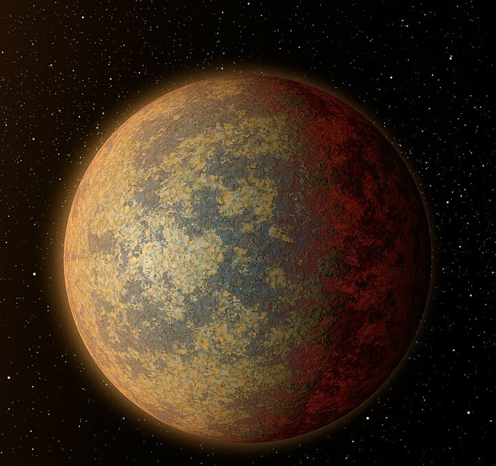
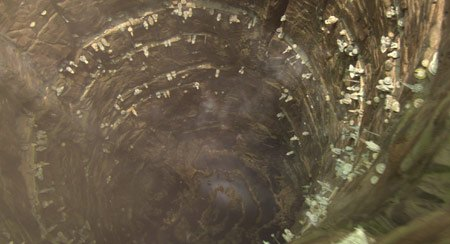

Située sur la Bordure extérieure, Utapau est une planète aride et venteuse, marquée par d'immenses puits naturels qui abritent ses cités souterraines. Utapau est surtout connue pour avoir été le lieu où Obi-Wan Kenobi affronta le général Grievous pendant les Guerres des Clones.
|  |  |